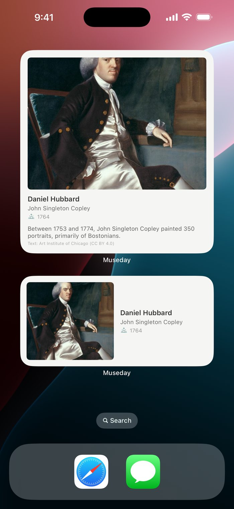

Zo krijg je elke dag een beroemd schilderij op het beginscherm van je iPhone
Van Gogh, Vermeer, Rembrandt. Een widget die om middernacht wisselt, maakt van je beginscherm een klein museumbezoek, elke keer dat je je telefoon pakt.
Zo stel je het in met Museday. De Small-widget met het schilderij van vandaag is gratis.
1. Open Museday één keer
Installeer Museday en open de app. Het schilderij van vandaag staat op het eerste scherm, met titel, kunstenaar, jaar en het museum waar het hangt. Tik op Over dit schilderij om de eigen tekst van het museum over het werk te lezen.
2. Zet de widget op je beginscherm
Houd een leeg deel van je beginscherm ingedrukt tot de apps gaan wiebelen.
Tik op Wijzig (of +) in de bovenhoek en zoek naar ‘Museday’.
Kies het formaat Small en tik op Voeg widget toe.
Dat is alles. Elke nacht om middernacht komt er een nieuw schilderij voor in de plaats. Er zijn 511 schilderijen van 290 kunstenaars, allemaal in de app, dus het blijft ook offline wisselen.

De twee widgets op deze afbeelding zijn de formaten Large en Medium, onderdeel van Museday Pro. De gratis widget is het formaat Small, waarbij het schilderij het vierkant vult.
3. Op het toegangsscherm
Houd het toegangsscherm ingedrukt, tik op Pas aan, tik op het widgetgebied en voeg Schilderij van vandaag (titel) van Museday toe. Deze toont de titel en kunstenaar van het schilderij van vandaag. Widgets voor het toegangsscherm zijn gratis.
Meer nodig?
Museday Pro is een eenmalige aankoop, geen abonnement:
Medium- en Large-widgets — ‘Schilderij en titel’ of ‘Alleen schilderij’
Een Extra groot-widget in iOS 27
Widgets die je favorieten, een thema, een periode of een museum tonen, te kiezen bij ‘Toon’ in Wijzig widget
Het schilderij van elke eerdere dag, met filters op periode, museum en kunstenaar
Vragen
Is het gratis?De Small-widget met het schilderij van vandaag en de widgets voor het toegangsscherm zijn gratis, zonder tijdslimiet en zonder advertenties. Museday Pro, een eenmalige aankoop, voegt widgets in Medium, Large en Extra groot toe, widgets die je favorieten, een thema, een periode of een museum tonen, en alle schilderijen van eerdere dagen.
Wanneer wisselt het schilderij?Elke dag om middernacht. Alle 511 schilderijen zitten in de app, dus het wisselt ook zonder internetverbinding.
Mijn Medium- of Large-widget is vervaagd en toont ‘Museday Pro’.Widgets in Medium, Large en Extra groot horen bij Pro. In de gratis versie gebruik je het formaat Small.
Kan ik het schilderij van gisteren nog eens zien?Ja. De schilderijen van de laatste 7 dagen staan op het scherm Vandaag onder ‘De laatste 7 dagen’. Eerdere dagen open je met Pro.